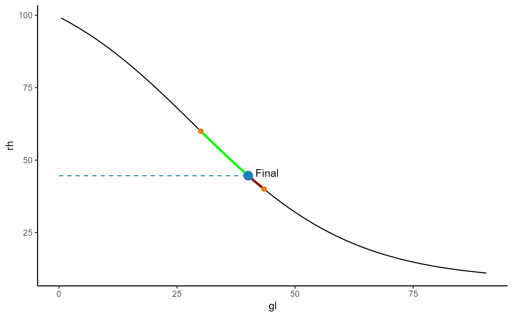

Plots a basic graph showing LiCl after mixing two solutions
Usage
plot_rh_mix(rh1, vol1, rh2, vol2, theme = "light")
Arguments
- rh1
The relative humidity percentage value of solution number one
- vol1
The volume 'in Litres' of solution rh1
- rh2
The relative humidity percentage value of solution number two
- vol2
The volume 'in Litres' of solution rh2#'
- theme
chose between light and dark plot background
Examples
plot_rh_mix(40,3,60,1)
